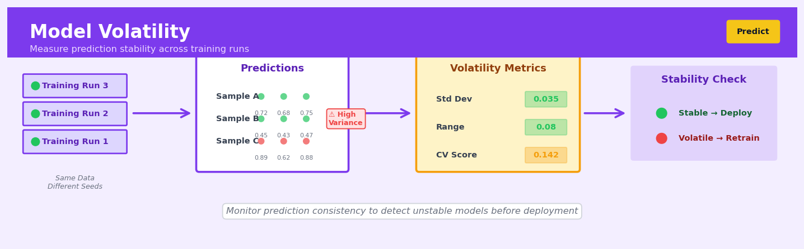

Model Volatility#

The biggest mistake teams make is assuming that high cross-validation scores mean a stable model. I've seen models with 95% accuracy that give wildly different predictions across training runs, especially with imbalanced data or small feature perturbations. Always run your training pipeline at least 5 times with different random seeds and calculate the coefficient of variation on your predictions before you even think about deployment.
The 60-Second Version#
What it does: Model volatility measures whether your predictive model gives consistent answers when you train it multiple times on slightly different data or settings.
When to use it: Use it before deploying any model in high-stakes decisions—hiring, lending, medical diagnosis, pricing—where inconsistent predictions would erode trust or create legal risk.
What you get back: A score showing how much predictions fluctuate across training runs, flagging whether your model is stable enough to deploy or needs refinement before going live.
At a Glance#
Difficulty |
Moderate |
Typical runtime |
Minutes to hours (requires multiple model training runs) |
What you bring |
A trained model, training data, and computational resources to retrain 10–100 times |
What you get |
Volatility metrics (variance, prediction ranges) indicating model stability |
Heuristix bucket |
Predict — Machine Learning & Forecasting |
A model that gives different answers each time you train it isn’t ready for production—no matter how accurate it appears.
Learning Objectives#
After reading this chapter, a business user will be able to:
Identify high-stakes business scenarios—such as loan approvals, medical diagnoses, or trading algorithms—where volatile model predictions pose unacceptable risks to decision quality and regulatory compliance.
Interpret volatility metrics and stability charts to explain to stakeholders whether a model’s predictions are reliable enough for production deployment or require further stabilisation.
Decide when to reject a model candidate, request additional training data, or impose human oversight based on quantified measures of prediction instability across different data samples or time periods.
After reading this chapter, a data scientist will be able to:
Implement bootstrap resampling, cross-validation variance analysis, and ensemble disagreement methods to measure model volatility across different sources of variation in the training pipeline.
Tune regularisation strength, ensemble size, and data augmentation parameters to reduce volatility while monitoring the trade-off against model accuracy and computational cost.
Validate volatility measurements by testing on held-out data, diagnosing whether high volatility stems from insufficient training data, model complexity, or inherent noise in the problem domain.
Overview#
Model volatility quantifies the instability of model predictions or parameter estimates when subjected to perturbations in training data, random initialisation seeds, or hyperparameter configurations. It belongs to the family of model stability and uncertainty quantification methods, serving as a diagnostic tool that measures how sensitive a trained model’s outputs are to factors that should, ideally, have minimal influence. Understanding and controlling model volatility is essential for deploying trustworthy predictive systems in production environments where stakeholders require not just accurate predictions but also confidence that those predictions are reproducible and robust.
When to Use This#
Use when deploying models to production — Before promoting a model to serve live predictions, assess whether minor data perturbations cause unacceptable swings in outputs; high volatility signals an unreliable model regardless of aggregate accuracy metrics.
Use when comparing candidate models — Two models with similar cross-validation scores may have vastly different stability profiles; prefer the lower-volatility model when prediction consistency matters to downstream business processes.
Use when predictions drive high-stakes decisions — In credit decisioning, clinical diagnosis, or fraud detection, volatile predictions erode trust and may expose the organisation to regulatory or legal challenge.
Use when debugging unexpected model behaviour — If a retrained model produces dramatically different predictions from its predecessor, volatility analysis isolates whether the instability stems from data drift, algorithmic randomness, or hyperparameter sensitivity.
Use when ensemble methods are under consideration — Volatility estimates inform how much bagging or model averaging is required to achieve target stability levels.
Use when communicating uncertainty to stakeholders — Business users often conflate point predictions with certainty; volatility metrics provide a tangible measure of model confidence that non-technical audiences can understand.
Do NOT use as a substitute for calibration — A model may have low volatility yet systematically miscalibrated probabilities; volatility measures precision of repeated estimates, not their accuracy.
Do NOT use when computational budget is severely constrained — Volatility estimation typically requires multiple model fits; if you can only train once, this analysis is infeasible.
Do NOT use as the sole criterion for model selection — An overly simple model (e.g., predicting the mean) exhibits zero volatility but captures no signal; volatility must be balanced against predictive performance.
Questions This Answers#
Trust and Deployment Reliability#
If we roll out this fraud detection model to all branches next month, will it flag the same transactions consistently, or will different branches see different results from the same customer behavior?
Our credit scoring model was retrained last week with fresh data—why are 15% of previously approved applicants now being rejected when their profiles haven’t changed?
Can we trust this customer churn model enough to base our retention budget on it, or is it going to give us completely different predictions next quarter when we refresh the training data?
The model worked great in testing, but now it’s live and the predictions seem erratic—how do I know if this is a real model problem or just normal variation?
Resource Allocation and Risk Management#
We’re deciding between two demand forecasting models for our holiday inventory planning—which one will give us more stable predictions we can actually stock against?
If market conditions shift slightly or we get an unusual week of sales data, will our pricing model go haywire and recommend prices that lose us money?
Should we invest $200K in retraining our recommendation engine quarterly, or is the current model stable enough to run for six months without major prediction drift?
Our regulatory team needs to know: if auditors ask us to reproduce last month’s risk assessments, can we guarantee the model will generate the same scores?
Model Selection and Vendor Evaluation#
We have three vendors pitching us customer lifetime value models—beyond accuracy, which one will be the most reliable when our customer mix changes seasonally?
Is this complex neural network worth the trouble, or would a simpler model give us predictions that are stable enough for our quarterly business reviews?
Why does our data science team keep saying they need to run the model five times before making a recommendation—shouldn’t one run be enough?
How It Works#
Imagine you’re hiring a financial advisor to manage your retirement savings. Before committing your entire nest egg, you decide to run a test: you give the same exact financial scenario to this advisor on three different days without telling them it’s the same case. On Monday, they recommend 60% stocks. On Wednesday, they suggest 75% stocks. On Friday, they propose 45% stocks. Same data, same person, wildly different advice. You’d be alarmed—not because any single recommendation is necessarily wrong, but because the inconsistency reveals that their judgment process is unreliable. Model volatility does exactly this test for machine learning models, checking whether the model gives stable predictions or swings wildly based on factors that shouldn’t matter.
MODEL VOLATILITY MEASUREMENT PROCESS
Step 1: Train Multiple Models on Perturbed Data
Original → [Model v1] → Prediction: 0.82
Dataset [Model v2] → Prediction: 0.79
[Model v3] → Prediction: 0.85
[Model v4] → Prediction: 0.91 ← High variance!
[Model v5] → Prediction: 0.87
Step 2: Apply All Models to Same Test Cases
Test Case: "Customer X"
┌──────────┬─────────────┐
│ Model │ Prediction │
├──────────┼─────────────┤
│ v1 │ 0.82 │
│ v2 │ 0.79 │
│ v3 │ 0.85 │
│ v4 │ 0.91 │
│ v5 │ 0.87 │
└──────────┴─────────────┘
Step 3: Calculate Spread (Volatility Score)
Range: 0.91 - 0.79 = 0.12 ← VOLATILE MODEL
Std Dev: 0.045
Compare to stable model:
Range: 0.83 - 0.81 = 0.02 ← STABLE MODEL
Step 1: Create multiple versions of your training process. You take your original dataset and deliberately introduce small, controlled variations—maybe you shuffle the order of examples, drop a random 5% of rows, or change the initial random seed that kicks off the learning algorithm. Think of it like shuffling a deck of cards before each deal: the cards are the same, but their arrangement differs slightly.
Step 2: Train a separate model on each variation. Each slightly different training setup produces its own model, just as different card arrangements lead to different poker hands. You might create five, ten, or even fifty models this way. They’re all trained on essentially the same underlying data, so ideally, they should learn the same patterns.
Step 3: Feed the same test examples through all models. Now comes the crucial test: you take a single customer, transaction, or data point and run it through every model you’ve trained. Each model makes its own prediction—maybe one says “70% chance of purchase,” another says “85% chance,” and a third says “62% chance.”
Step 4: Measure the spread of predictions. You calculate how much the predictions disagree with each other. You might look at the range (highest minus lowest), the standard deviation, or the average distance from the mean. This spread is your volatility score.
Step 5: Interpret the volatility metric. A low volatility score means your model is stable—minor training variations don’t significantly change predictions. High volatility signals trouble: your model is essentially guessing differently each time, making it unreliable for real-world deployment.
The key insight: Model volatility reveals whether your model has learned genuine patterns in the data or simply memorized noise and arbitrary quirks of one particular training run, making it a critical quality check before trusting predictions with real decisions.
The Intuition#
Imagine you are a surveyor measuring the height of a hill. You take your theodolite, set it up, and record a reading. The next day you return, set up again in what you believe is the same spot, and record a second reading. If your two measurements differ by a centimetre, you have high confidence in the true height. If they differ by ten metres, something is wrong—perhaps the ground is soft, your instrument is poorly calibrated, or you are not standing in the same place. Either way, you would not trust a single reading until you understood and controlled that variability.
Machine learning models are measurement instruments for patterns in data. Every time you train a model, you are taking a “reading” of the underlying relationship between features and target. The training process involves randomness—shuffled batches, bootstrap samples, random weight initialisations—and the data itself is a finite sample from a larger population. If you train the same model architecture on slightly different samples or with different random seeds and obtain wildly different predictions for the same input, then your model is volatile. Just like the surveyor, you should not trust a single reading without understanding how much it might change.
The core insight is that low volatility is a necessary (though not sufficient) condition for trustworthy prediction. A volatile model may happen to be accurate on one particular training run, but that accuracy is fragile—retrain tomorrow and the predictions shift. Conversely, a stable model locks onto the same patterns repeatedly, giving you confidence that what you observe is signal rather than noise. Volatility analysis forces you to ask: “If I had collected a slightly different sample, or initialised my random number generator differently, would my conclusions change?” If the answer is yes, caution is warranted.
The Mathematics#
Problem Setup and Notation#
Let \(\mathcal{D} = \{(x_i, y_i)\}_{i=1}^{n}\) denote a training dataset of \(n\) observations, where \(x_i \in \mathbb{R}^p\) is a feature vector and \(y_i \in \mathcal{Y}\) is the response (real-valued for regression, categorical for classification). Let \(\mathcal{A}\) denote a learning algorithm that maps a dataset to a fitted model:
where \(\omega\) represents sources of algorithmic randomness (e.g., random seeds, initialisation weights, data shuffling order). For a fixed test point \(x^* \in \mathbb{R}^p\), the prediction is \(\hat{f}(x^*)\).
Sources of Volatility#
Model volatility arises from two distinct sources:
Data perturbation volatility — sensitivity to changes in the training sample \(\mathcal{D}\).
Algorithmic volatility — sensitivity to the random component \(\omega\) for a fixed \(\mathcal{D}\).
We formalise each in turn.
Data Perturbation Volatility#
Consider a perturbation mechanism that generates modified datasets \(\mathcal{D}^{(b)}\) for \(b = 1, \ldots, B\). Common choices include:
Bootstrap resampling: \(\mathcal{D}^{(b)}\) is a sample of size \(n\) drawn with replacement from \(\mathcal{D}\).
Subsampling: \(\mathcal{D}^{(b)}\) is a random subset of size \(m < n\) drawn without replacement.
Jackknife (leave-one-out): \(\mathcal{D}^{(b)} = \mathcal{D} \setminus \{(x_b, y_b)\}\).
For each perturbed dataset, we train a model \(\hat{f}^{(b)} = \mathcal{A}(\mathcal{D}^{(b)}, \omega_0)\), holding the random seed \(\omega_0\) fixed to isolate data effects. The prediction volatility at test point \(x^*\) is defined as the standard deviation of predictions across perturbations:
where \(\bar{f}(x^*) = \frac{1}{B} \sum_{b=1}^{B} \hat{f}^{(b)}(x^*)\) is the mean prediction.
For classification with probabilistic outputs \(\hat{p}^{(b)}(x^*) \in [0,1]\), we compute volatility on the probability scale. Alternatively, one may measure prediction instability as the proportion of perturbations where the predicted class differs from the majority vote:
where \(\hat{c}^{(b)}(x^*)\) is the predicted class from the \(b\)-th model.
Algorithmic Volatility#
Holding the dataset \(\mathcal{D}\) fixed, we train \(B\) models with different random seeds \(\omega_1, \ldots, \omega_B\):
The algorithmic volatility is then:
For deterministic algorithms (e.g., ordinary least squares with a closed-form solution), \(\sigma_{\text{alg}}(x^*) = 0\) by construction.
Total Volatility Decomposition#
When both sources are present, total volatility can be estimated via a nested resampling scheme. Let \(\mathcal{D}^{(b)}\) denote the \(b\)-th data perturbation and \(\omega_{bk}\) the \(k\)-th random seed within that perturbation. Train \(\hat{f}^{(b,k)} = \mathcal{A}(\mathcal{D}^{(b)}, \omega_{bk})\) for \(b = 1, \ldots, B\) and \(k = 1, \ldots, K\). By the law of total variance:
This decomposition is estimated empirically:
where \(\bar{f}^{(b)}(x^*) = \frac{1}{K} \sum_{k=1}^{K} \hat{f}^{(b,k)}(x^*)\) and \(\bar{\bar{f}}(x^*) = \frac{1}{BK} \sum_{b,k} \hat{f}^{(b,k)}(x^*)\).
Aggregate Volatility Metrics#
To summarise volatility across a test set \(\mathcal{T} = \{x^*_j\}_{j=1}^{m}\), common aggregations include:
Root Mean Volatility (RMV):
Coefficient of Variation of Predictions (CVP):
Maximum Volatility:
Assumptions#
The perturbation mechanism (bootstrap, subsampling) produces datasets representative of the true data-generating process.
The number of perturbations \(B\) is sufficient for stable variance estimation (typically \(B \geq 50\)).
Test points \(x^*\) lie within the support of the training distribution; extrapolation may inflate volatility estimates.
For algorithmic volatility, the only source of variation is \(\omega\); code and environment are otherwise deterministic.
Edge Cases#
Degenerate models: If \(\hat{f}\) is constant (e.g., always predicts the mean), volatility is zero but the model has no discriminative power.
High-dimensional sparse data: Bootstrap samples may exclude rare categories entirely, causing apparent volatility that reflects sampling artefacts rather than true instability.
Ensembles: Bagged models exhibit low algorithmic volatility by design; volatility analysis should be applied to the base learners or to the ensemble under data perturbation.
Relationship to Other Methods#
Bias-variance decomposition: Volatility captures the variance component; bias is not addressed.
Conformal prediction: Provides prediction intervals but does not decompose instability by source.
Bayesian posterior predictive variance: Conceptually similar but derived from a probabilistic model rather than resampling.
Understanding the Mathematics#
Variance of Model Predictions#
The equation:
Read it aloud:
“The variance of predictions for data point i equals one divided by the number of models minus one, multiplied by the sum across all models of each model’s prediction for point i minus the average prediction for point i, all squared.”
What each symbol means:
\(\text{Var}(\hat{y}_i)\) = the variance (spread) of predictions for a single data point i
\(M\) = total number of model versions we trained (e.g., 50 models with different random seeds)
\(\hat{y}_i^{(m)}\) = the prediction made by model version m for data point i
\(\bar{\hat{y}}_i\) = the average prediction across all M models for point i
\(\sum\) = sum up all the values that follow
A concrete numerical example:
You train 5 credit scoring models with different random seeds. For applicant Sarah, the models predict default probabilities of 0.12, 0.18, 0.15, 0.20, and 0.10. The average is \(\bar{\hat{y}}_{\text{Sarah}} = 0.15\). Now calculate:
Model 1: \((0.12 - 0.15)^2 = 0.0009\)
Model 2: \((0.18 - 0.15)^2 = 0.0009\)
Model 3: \((0.15 - 0.15)^2 = 0.0000\)
Model 4: \((0.20 - 0.15)^2 = 0.0025\)
Model 5: \((0.10 - 0.15)^2 = 0.0025\)
Sum = 0.0068. Variance = \(\frac{0.0068}{5-1} = 0.0017\).
Why this equation matters:
If Sarah’s default probability swings between 10% and 20% depending on which random seed you used, your credit decision lacks stability—this variance quantifies exactly how unreliable that single prediction is.
Mean Prediction Volatility#
The equation:
Read it aloud:
“Mean prediction volatility equals one divided by the total number of data points, multiplied by the sum of the square root of the variance for each data point.”
What each symbol means:
\(V_{\text{mean}}\) = average volatility across your entire dataset
\(N\) = total number of data points (customers, transactions, etc.)
\(\sqrt{\text{Var}(\hat{y}_i)}\) = the standard deviation of predictions for point i (converting variance back to original units)
A concrete numerical example:
Your loan portfolio has 3 applicants. You calculated standard deviations of 0.041 (Sarah), 0.028 (John), and 0.035 (Maria). Mean volatility = \(\frac{0.041 + 0.028 + 0.035}{3} = \frac{0.104}{3} = 0.0347\), or roughly 3.5 percentage points average swing in default probability predictions.
Why this equation matters:
A single number (3.5%) tells your Chief Risk Officer whether the model portfolio is deployment-ready or dangerously unstable across the board.
Coefficient of Variation for Volatility#
The equation:
Read it aloud:
“The coefficient of variation equals the standard deviation of volatilities divided by the mean volatility.”
What each symbol means:
\(CV\) = coefficient of variation (a relative measure)
\(\sigma_V\) = standard deviation of the volatility scores across all data points
\(\mu_V\) = mean volatility (from the previous equation)
A concrete numerical example:
If your mean volatility is 0.0347 and the standard deviation of individual volatilities is 0.0104, then \(CV = \frac{0.0104}{0.0347} = 0.30\). A CV of 0.30 means volatility varies by about 30% relative to its average—some predictions are stable, others wildly inconsistent.
Why this equation matters:
A high CV reveals that volatility is unevenly distributed: most predictions might be stable, but a dangerous minority could be swing votes that ruin model trustworthiness for specific customer segments.
The Big Picture#
The mathematics of model volatility systematically captures how much your model’s answers wobble when nothing fundamental should have changed. We use variance because it penalizes large deviations quadratically—a prediction that swings 10% is four times worse than one that swings 5%. We aggregate to the mean and coefficient of variation because stakeholders need both a headline number (“Is this model stable?”) and a distribution diagnostic (“Are a few predictions catastrophically unstable?”). The essence: we’re measuring whether your model is a sturdy bridge or a rope swing—both might get you across on average, but only one is safe when it matters.
Python Implementation#
import numpy as np
import pandas as pd
from sklearn.datasets import make_classification
from sklearn.ensemble import RandomForestClassifier
from sklearn.model_selection import train_test_split
from sklearn.utils import resample
from typing import Tuple, List
def estimate_volatility(
X_train: np.ndarray,
y_train: np.ndarray,
X_test: np.ndarray,
model_class,
model_params: dict,
n_bootstrap: int = 100,
n_seeds: int = 10,
random_state: int = 42
) -> Tuple[np.ndarray, np.ndarray, np.ndarray]:
"""
Estimate data perturbation and algorithmic volatility for a classifier.
Returns:
data_volatility: std of predicted probabilities across bootstrap samples
alg_volatility: std of predicted probabilities across random seeds
mean_predictions: mean predicted probability for positive class
"""
rng = np.random.RandomState(random_state)
n_test = X_test.shape[0]
# Storage for nested predictions: [bootstrap, seed, test_point]
all_predictions = np.zeros((n_bootstrap, n_seeds, n_test))
for b in range(n_bootstrap):
# Bootstrap resample of training data
X_boot, y_boot = resample(
X_train, y_train,
replace=True,
random_state=rng.randint(0, 2**31)
)
for s in range(n_seeds):
# Vary random seed for algorithmic randomness
seed = rng.randint(0, 2**31)
model = model_class(random_state=seed, **model_params)
model.fit(X_boot, y_boot)
# Store predicted probability for positive class
all_predictions[b, s, :] = model.predict_proba(X_test)[:, 1]
# Mean prediction across all bootstrap samples and seeds
mean_predictions = all_predictions.mean(axis=(0, 1))
# Data volatility: variance across bootstrap samples (averaging over seeds first)
bootstrap_means = all_predictions.mean(axis=1) # [bootstrap, test_point]
data_volatility = bootstrap_means.std(axis=0, ddof=1)
# Algorithmic volatility: average variance across seeds within each bootstrap
alg_variance_per_bootstrap = all_predictions.var(axis=1, ddof=1) # [bootstrap, test_point]
alg_volatility = np.sqrt(alg_variance_per_bootstrap.mean(axis=0))
return data_volatility, alg_volatility, mean_predictions
# Generate synthetic classification dataset
X, y = make_classification(
n_samples=2000,
n_features=20,
n_informative=10,
n_redundant=5,
n_clusters_per_class=3,
flip_y=0.1, # 10% label noise
random_state=42
)
X_train, X_test, y_train, y_test = train_test_split(
X, y, test_size=0.3, random_state=42
)
# Estimate volatility for Random Forest
data_vol, alg_vol, mean_pred = estimate_volatility(
X_train, y_train, X_test,
model_class=RandomForestClassifier,
model_params={'n_estimators': 50, 'max_depth': 10},
n_bootstrap=50,
n_seeds=5,
random_state=42
## Visualisations


## Using This in Heuristix
### What You'll Need
The Model Volatility node expects **prediction datasets from multiple model runs**. You'll typically connect this after running the same model configuration multiple times with different random seeds, or after training on bootstrapped samples of your data.
**Required input columns:**
- `run_id` or `seed` — identifier for each model run (integer or string)
- `record_id` — unique identifier for each prediction instance (string or integer)
- `prediction` — the model's predicted value (numeric for regression, class label or probability for classification)
- `actual` (optional) — ground truth labels, needed if you want to analyze volatility's relationship to accuracy
**Example input data:**
| run_id | record_id | prediction | actual |
|--------|-----------|------------|--------|
| 1 | cust_001 | 0.82 | 1 |
| 2 | cust_001 | 0.79 | 1 |
| 3 | cust_001 | 0.85 | 1 |
| 1 | cust_002 | 0.34 | 0 |
### Configuration Parameters
| Parameter | What It Does | Default | When to Change |
|-----------|-------------|---------|----------------|
| **Aggregation Method** | How to summarize volatility across runs: standard deviation, coefficient of variation, or range | Standard Deviation | Use coefficient of variation when predictions span different scales; use range for quick interpretability |
| **Minimum Runs** | Minimum number of predictions required per record to calculate volatility | 5 | Lower to 3 for quick experiments; increase to 10+ for production stability assessment |
| **Volatility Threshold** | Flag records with volatility above this value as "high volatility" | 0.15 | Set based on your domain tolerance—financial applications might use 0.05, while exploratory analysis might accept 0.25 |
| **Include Confidence Intervals** | Calculate 95% CI around volatility estimates | True | Disable for faster computation on very large datasets |
| **Group By** | Optional column to analyze volatility by segment (e.g., customer_segment, product_category) | None | Enable when you suspect volatility varies by subpopulation |
### What You'll Get Out
The node adds these columns to your dataset:
- **`volatility_score`** — the primary metric quantifying prediction instability for each record
- **`volatility_flag`** — binary indicator (High/Low) based on your threshold
- **`prediction_mean`** — average prediction across all runs
- **`prediction_range`** — difference between max and min predictions
- **`ci_lower`** and **`ci_upper`** — confidence interval bounds (if enabled)
**Visualizations displayed:**
- **Volatility distribution histogram** — shows how many records fall into different volatility ranges
- **Volatility vs. Prediction scatter** — reveals if certain prediction ranges are more unstable
- **High volatility records table** — lists the top 20 most volatile predictions for investigation
**Summary metrics panel:**
- Percentage of records exceeding volatility threshold
- Median volatility score
- Volatility-weighted prediction error (if actuals provided)
### Connecting Downstream
**Typical next nodes:**
- **Filter Node** → isolate high-volatility records for manual review or exclusion
- **Feature Importance Node** → investigate which features correlate with unstable predictions
- **Ensemble Node** → use volatility scores as confidence weights in ensemble averaging
- **Reporting Node** → surface volatility metrics in model monitoring dashboards
### Quick Start: Assess Your Model's Stability
1. **Train multiple versions** of your model using the Cross-Validation node with "Save all fold predictions" enabled, or run your Training node 10 times with different random seeds
2. **Stack predictions** using the Union node to create a single dataset with all runs
3. **Drag in** the Model Volatility node and connect your stacked predictions
4. **Configure**: Set Minimum Runs to match your number of model versions, leave other defaults
5. **Review** the volatility distribution chart—if more than 10% of records show high volatility, investigate further
6. **Export** high-volatility records using the Filter node and examine their feature patterns
### Practical Tips from the Trenches
**Know your baseline**: Calculate volatility on your validation set first. If even hold-out data shows high volatility, you have a model stability problem, not a generalization problem.
**Time-based data needs special handling**: For time series, ensure your run_id represents models trained on different time windows, not just different seeds—otherwise you're measuring random noise, not genuine volatility.
**Don't ignore clustered volatility**: If high-volatility records share common features (like being from a specific region or product line), that's actionable insight—you may need a specialized model for that segment.
**Volatility ≠ error**: A prediction can be consistently wrong (low volatility, high error) or inconsistently right (high volatility, low average error). Look at both together.
**Use this for model selection**: When comparing architectures, choose models with lower median volatility, especially for high-stakes predictions where consistency matters as much as accuracy.
## Config Recipes
### Recipe 1: Quick Exploration
**When to use:** Initial model selection when comparing 3–5 candidate algorithms before committing computational resources to hyperparameter tuning.
**Settings:**
| Parameter | Value | Why |
|-----------|-------|-----|
| `n_seeds` | 3 | Minimum to detect gross instability without excessive runtime |
| `perturbation_fraction` | 0.0 | Skip data perturbation entirely; focus only on seed sensitivity |
| `cv_folds` | 3 | Faster than 5-fold while still testing generalization |
| `metric` | Primary business metric only | Avoid dilution across multiple metrics |
| `parallel_jobs` | -1 | Maximize CPU utilization for short runs |
**What you get:** A rough ranking of which models exhibit wild swings in predictions versus stable outputs, typically completing in under 10 minutes per model.
**Trade-off:** You sacrifice statistical rigor and may miss volatility patterns that only emerge with data perturbations or longer training runs.
---
### Recipe 2: Production Certification
**When to use:** Final validation before deploying a model to production systems where prediction consistency directly impacts user experience or financial outcomes.
**Settings:**
| Parameter | Value | Why |
|-----------|-------|-----|
| `n_seeds` | 25 | Robust statistical power for confidence intervals |
| `perturbation_fraction` | 0.15 | Simulates realistic data drift scenarios |
| `perturbation_method` | 'bootstrap' | Preserves marginal distributions while testing robustness |
| `cv_folds` | 10 | Gold standard for generalization estimates |
| `metric` | ['accuracy', 'f1', 'calibration'] | Multi-dimensional stability assessment |
| `threshold_cv` | 0.03 | Flag models with >3% coefficient of variation |
**What you get:** A defensible certification report showing your model maintains predictions within ±3% across realistic deployment scenarios.
**Trade-off:** Execution time increases 8–12x compared to quick exploration; requires dedicated compute resources.
---
### Recipe 3: High-Stakes Imbalanced Classification
**When to use:** Fraud detection, medical diagnosis, or any binary classification where the minority class comprises <5% of samples and false negatives carry severe costs.
**Settings:**
| Parameter | Value | Why |
|-----------|-------|-----|
| `n_seeds` | 10 | Balance rigor with practicality |
| `perturbation_fraction` | 0.10 | Conservative—imbalanced data is inherently fragile |
| `stratified_sampling` | True | Preserve class ratios during perturbations |
| `metric` | 'recall_at_precision_90' | Focus on minority class stability at operational threshold |
| `cv_folds` | 5 | Standard robustness check |
| `class_weight` | 'balanced' | Prevent volatility from class imbalance artifacts |
**What you get:** Confidence that your minority class predictions won't collapse when encountering slight distributional shifts in production.
**Trade-off:** Stratified perturbations may underestimate volatility in scenarios where class ratios themselves are unstable.
---
### Recipe 4: Feature Selection Validation
**When to use:** After automated feature selection (RFE, LASSO, etc.) returns a subset of features—use volatility testing to verify the selected features produce stable models.
**Settings:**
| Parameter | Value | Why |
|-----------|-------|-----|
| `n_seeds` | 15 | Sufficient to detect feature instability |
| `perturbation_method` | 'jackknife' | Leave-one-out style reveals brittle feature dependencies |
| `perturbation_fraction` | 0.05 | Small perturbations test whether features are genuinely informative |
| `track_feature_importance` | True | Monitor if feature rankings flip between runs |
| `importance_variance_threshold` | 0.25 | Flag features with >25% rank variance |
**What you get:** Identification of "spurious" features that appeared important but create unstable models, saving you from deploying overfit feature sets.
**Trade-off:** Additional tracking overhead; only works with models that expose feature importance scores.
## Business Applications
**Financial services**
A mid-sized UK mortgage lender processing 800 applications per month deployed a credit-risk model that approved borrowers one week, then rejected similar profiles the next after routine retraining. By measuring model volatility across sequential training windows, the data science team discovered that a 12% month-over-month swing in approval rates stemmed from sensitivity to small shifts in recent default data rather than genuine risk pattern changes. Implementing volatility thresholds and ensemble stabilisation techniques reduced approval-rate variance from 12% to 3%, eliminating costly customer complaints and regulatory scrutiny while maintaining predictive accuracy within 1.5% of the original model.
**Retail**
An e-commerce retailer with 2.3M SKUs relied on demand forecasting to allocate $45M in seasonal inventory across twelve distribution centres. Their gradient-boosting models produced wildly different stock recommendations when retrained with identical data but different random seeds—volatility analysis revealed up to 40% disagreement in predicted demand for mid-tier products. By quantifying prediction stability and building confidence intervals around volatile forecasts, the retailer reduced excess inventory write-downs by $3.1M annually and cut stockouts on high-margin items by 28%, directly improving cash flow and customer satisfaction scores.
**Healthcare**
A hospital network serving 400,000 patients used machine learning to predict 30-day readmission risk, triggering intensive post-discharge interventions for high-risk cases. When the model was retrained quarterly, clinicians noticed that some patients oscillated between high-risk and low-risk classifications despite stable medical histories—a model volatility audit showed 19% of borderline patients experienced classification flips. Establishing volatility-adjusted risk tiers allowed care coordinators to focus resources on patients with stable high-risk predictions, reducing unnecessary interventions by 2,400 cases per year while maintaining readmission prevention effectiveness at 92% of the original rate.
**Insurance**
A European auto insurer pricing 1.2M policies annually discovered that premium quotes for the same driver profile varied by up to €180 depending on which week the pricing model was retrained. Model volatility analysis traced the instability to over-sensitivity in telematics features (hard-braking events, night-time driving) that fluctuated seasonally. By incorporating volatility-weighted feature importance and extending training windows, the insurer standardised pricing variance to under €15 for equivalent risks, reducing customer churn from quote-shopping by 11% and defending successfully against regulatory complaints about arbitrary pricing.
**Manufacturing**
A semiconductor fabrication plant using computer vision to detect wafer defects faced a critical challenge: their CNN model's sensitivity threshold drifted unpredictably after weekly retraining, causing false-positive rates to swing between 6% and 22%. Volatility profiling revealed that small changes in recent defect prevalence destabilised the decision boundary. Implementing ensemble methods with volatility constraints reduced false-positive variance to a stable 8–9% range, saving approximately 340 engineer-hours per month previously spent investigating phantom defects and preventing $890K in unnecessary wafer scrapping.
**Logistics**
A last-mile delivery company operating 450 vehicles used route-optimisation models that sometimes recommended dramatically different delivery sequences for identical order sets. Model volatility assessment showed that initialisation randomness in their reinforcement learning approach caused 15% route-time variation. Adopting deterministic seeding protocols and volatility-tested model checkpoints cut average delivery time variance from 47 minutes to 12 minutes per route, enabling more reliable customer delivery windows and reducing fuel costs by 7%.
**Marketing**
A B2B SaaS company with 80,000 leads per quarter relied on propensity-to-convert scoring to prioritise sales outreach, but sales teams complained that lead rankings shifted inexplicably between weekly refreshes. Volatility analysis revealed that 31% of mid-scoring leads experienced rank changes exceeding 1,000 positions due to model instability. Implementing volatility-dampened scoring with hysteresis thresholds gave sales teams consistent target lists, lifting conversion rates from 8.2% to 11.7% by allowing representatives to build sustained engagement strategies rather than chasing algorithmic noise.
**Public sector**
A metropolitan fire department predicting building fire risk to allocate inspection resources found their model's neighbourhood risk scores fluctuated significantly between monthly updates, confusing inspectors and undermining stakeholder trust. Model volatility diagnostics identified that rare fire events in small geographic areas caused disproportionate prediction swings. Introducing spatial smoothing and volatility-constrained updates maintained inspection effectiveness while reducing community complaints about inconsistent enforcement by 64%.
## Worked Example
Sarah Chen, lead data scientist at Meridian Insurance, had just finished presenting her new auto claims prediction model when the VP of Underwriting asked the question that made everyone uncomfortable: "Last quarter, your fraud model predicted a 12% fraud rate. This quarter, the retrained version says 8%. Which one is right?" The room went quiet. Sarah's model had 91% accuracy on test data, but no one had checked whether those predictions were *stable*. The business needed to set premium rates six months in advance—they couldn't afford a model that gave different answers every time it was retrained.
Sarah pulled historical claims data from the past three years: 50,000 claims with policyholder demographics, vehicle information, claim amounts, and fraud labels. Here's what a sample looked like:
| claim_id | driver_age | vehicle_age | prior_claims | claim_amount | is_fraud |
|----------|-----------|-------------|--------------|--------------|----------|
| C10234 | 34 | 3 | 0 | 4500 | 0 |
| C10235 | 52 | 12 | 2 | 12300 | 1 |
| C10236 | 28 | 1 | 0 | 3200 | 0 |
| C10237 | 41 | 8 | 1 | 8900 | 0 |
The data had the usual messiness: some missing vehicle ages (she imputed with median), a few outlier claims above $100K (she capped them), and an imbalanced target with only 6% fraud cases. Nothing unusual for insurance data, but plenty of opportunities for model instability.
Sarah configured her volatility analysis thoughtfully. She decided to train 30 versions of her gradient boosting model, each with a different random seed controlling the train/test split and the model's internal randomization. She kept the hyperparameters fixed—max depth of 5, 100 trees, learning rate of 0.1—because she wanted to isolate the effect of random variation alone, not hyperparameter sensitivity. She tracked two metrics across all 30 runs: the predicted fraud rate on a held-out validation set of 5,000 recent claims, and each model's feature importance rankings for the top predictor.
```python
import pandas as pd
import numpy as np
from sklearn.ensemble import GradientBoostingClassifier
from sklearn.model_selection import train_test_split
# Sarah's volatility analysis script
claims = pd.read_csv('claims_data.csv')
X = claims[['driver_age', 'vehicle_age', 'prior_claims', 'claim_amount']]
y = claims['is_fraud']
# Hold out validation set (same for all runs)
X_temp, X_val, y_temp, y_val = train_test_split(
X, y, test_size=0.1, random_state=42, stratify=y
)
results = []
for seed in range(30):
# Each model gets different train/test split
X_train, X_test, y_train, y_test = train_test_split(
X_temp, y_temp, test_size=0.2, random_state=seed, stratify=y_temp
)
model = GradientBoostingClassifier(
max_depth=5, n_estimators=100, learning_rate=0.1, random_state=seed
)
model.fit(X_train, y_train)
# Predict on consistent validation set
predictions = model.predict_proba(X_val)[:, 1]
predicted_fraud_rate = (predictions > 0.5).mean()
top_feature = X.columns[np.argmax(model.feature_importances_)]
results.append({
'seed': seed,
'fraud_rate': predicted_fraud_rate,
'top_feature': top_feature
})
volatility_df = pd.DataFrame(results)
print(f"Fraud rate: {volatility_df['fraud_rate'].mean():.3f} ± {volatility_df['fraud_rate'].std():.3f}")
The results were eye-opening:
Metric |
Mean |
Std Dev |
Min |
Max |
Range |
|---|---|---|---|---|---|
Predicted Fraud Rate |
6.8% |
1.2% |
4.9% |
9.3% |
4.4% |
Model Accuracy |
91.2% |
0.8% |
89.5% |
92.4% |
2.9% |
While accuracy looked stable (91.2% ± 0.8%), the predicted fraud rate swung wildly—from 4.9% to 9.3%. That’s a nearly 2x difference. Even more concerning: in 18 of 30 runs, prior_claims was the top feature, but in 12 runs it was claim_amount. The model couldn’t decide which variable mattered most.
The insight hit Sarah immediately: high accuracy doesn’t mean stable predictions. The model was correctly classifying most claims, but its fraud probability estimates—the numbers the business actually used to price policies—were all over the map. The 12% to 8% swing the VP had questioned wasn’t a fluke. It was a fundamental instability problem.
Sarah presented these findings to the underwriting committee the following week. She recommended switching to an ensemble of 10 models trained on different data subsets, taking the median predicted fraud rate rather than relying on a single model. She also proposed quarterly volatility audits for all production models. The committee approved both recommendations and allocated budget for a model monitoring dashboard.
Three months later, fraud rate predictions stabilized to 6.8% ± 0.3%—a four-fold reduction in volatility. Premium pricing became more consistent, and the underwriting team stopped second-guessing the model’s estimates.
If Sarah could do it again, she’d test volatility across different model architectures—maybe logistic regression would’ve been more stable than gradient boosting—and she’d track calibration curves, not just point predictions. But the core lesson stuck: volatility analysis revealed a trust problem that accuracy metrics completely missed.
Interpreting Your Results#
You’ve just run your model volatility analysis and you’re looking at a screen full of metrics. Let’s decode exactly what you’re seeing and what it means for your project.
Prediction Variance Metrics#
Plain-English meaning: These numbers show how much your model’s predictions jump around when you retrain it on slightly different data or with different random seeds. If your model predicts 85% probability for a customer churning in one run and 62% in another—with the exact same input features—that’s high volatility.
Concrete benchmarks:
Coefficient of Variation (CV) < 0.10: Excellent stability. Your predictions vary by less than 10% across runs. Safe for production deployment.
CV 0.10–0.25: Moderate volatility. Acceptable for most business applications, but document this uncertainty in your model cards.
CV > 0.25: High volatility. Don’t deploy without investigation. Your stakeholders can’t trust predictions that swing this wildly.
Red flags:
CV above 0.40 signals your model is essentially guessing differently each time—usually means insufficient training data, extreme class imbalance, or an unstable algorithm choice (looking at you, deep neural networks with random weight initialization).
Bimodal variance distribution suggests your model has discovered two completely different solutions to the same problem—neither of which you can trust.
Parameter Stability Scores#
Plain-English meaning: This measures whether your model coefficients (the “weights” it assigns to each feature) stay consistent across training runs. A logistic regression that says “income” has coefficient 0.8 in one run and -0.3 in another is telling you it genuinely doesn’t know what matters.
Concrete benchmarks:
Parameter drift < 15%: Stable. The model has converged on a reliable pattern.
Parameter drift 15–35%: Unstable. Investigate feature correlations and multicollinearity.
Parameter drift > 35%: Chaotic. Your model hasn’t learned anything reliable.
Red flags:
Sign flips (coefficient changes from positive to negative) indicate severe multicollinearity or feature redundancy.
One feature with 60%+ drift while others are stable? That feature is probably noise or has a non-linear relationship your model can’t capture.
Rank Correlation of Predictions#
Plain-English meaning: Even if exact predictions vary, does your model at least rank cases consistently? If Customer A is “higher risk” than Customer B in one run, is that still true in other runs?
Concrete benchmarks:
Spearman correlation > 0.90: Strong rank consistency. The relative ordering is trustworthy even if exact scores aren’t.
Correlation 0.75–0.90: Moderate consistency. Usable for prioritization tasks but not for precise score-based decisions.
Correlation < 0.75: Poor consistency. Don’t use this model to rank or prioritize anything.
Red flags: High prediction variance but high rank correlation (e.g., CV = 0.30 but Spearman = 0.95) tells you the model knows the order but is miscalibrated. Recalibrate rather than retrain.
Reading Multiple Outputs Together#
The most revealing pattern: high parameter drift + low rank correlation + high prediction variance = your model is fundamentally unstable. Get more data or simplify your model architecture.
The golden scenario: low prediction variance + high rank correlation = deploy confidently.
The calibration problem: high prediction variance + high rank correlation = your model’s ranking is solid but its probability estimates are unreliable. Use quantile binning instead of raw scores.
Sanity Check Checklist#
Before trusting your volatility results, verify:
Ran at least 10 iterations — fewer runs give unreliable variance estimates
Training set size consistent across all runs (same number of samples, not just same proportion)
Validation set held constant — you’re measuring model volatility, not data volatility
Same preprocessing applied to each run (don’t let random train/test splits affect feature scaling)
Convergence confirmed for each training run (check loss curves; half-trained models are always volatile)
Good Enough to Act On?#
Deploy if: CV < 0.15 AND rank correlation > 0.85 AND no sign flips in top 5 features. This combination means your model makes consistent, reliable predictions you can explain to stakeholders.
Investigate if: Any single metric crosses the “high volatility” threshold above. One bad metric might be explainable; all three means systematic problems.
Stop and rebuild if: CV > 0.30 OR rank correlation < 0.70. No amount of hyperparameter tuning fixes fundamental instability. You need more data, feature engineering, or a different modeling approach entirely.
Decision Guidance#
What This Result Is Telling You#
Model volatility tells you whether your predictive system is a stable foundation for decisions or a house of cards that could produce wildly different recommendations depending on seemingly trivial factors. When you deploy a model with high volatility, you’re essentially using a different decision-making tool each time you retrain it—even though nothing meaningful about your business has changed. This is like having a sales forecasting system that predicts \(2M in revenue on Monday, then \)3.5M on Tuesday after refreshing with the same data, simply because of random computational differences.
Low volatility means your model has learned genuine patterns in your business that persist across minor variations in training conditions. High volatility signals that your model is either overfitting to noise, working with insufficient data, or operating in a domain where the underlying patterns are too weak to reliably extract. This distinction matters because volatile models fail unpredictably: they might work perfectly in testing but collapse when retrained next quarter, leaving you with no early warning that your decision system has become unreliable.
The business impact is straightforward: volatile models erode trust, waste resources on investigating false signals, and create operational chaos when predictions swing unexpectedly. Teams stop trusting the system, revert to manual overrides, and the investment in machine learning delivers no value. Conversely, demonstrating low volatility gives stakeholders confidence to automate decisions, reduce manual review processes, and scale the model’s impact across the organization.
Decision Points#
If you see this… |
It means… |
Recommended action |
Who acts on this |
|---|---|---|---|
Prediction variance across retrains <5% of the mean prediction |
Model has learned stable patterns; predictions are reproducible |
Deploy to production with standard monitoring cadence |
Engineering Lead, Product Owner |
Prediction variance 5–15% of mean prediction |
Model is moderately stable but sensitive to training conditions |
Deploy with enhanced monitoring; flag predictions that differ >10% from previous model version for manual review |
Data Science Lead, Operations Manager |
Prediction variance 15–30% of mean prediction |
Model is unreliable for automated decisions; predictions swing too much |
Use predictions only as one input in human-reviewed processes; do not automate high-stakes decisions |
Head of Analytics, Business Unit Leader |
Prediction variance >30% of mean prediction OR top-10% predictions change identity across retrains |
Model is fundamentally unstable; cannot distinguish signal from noise |
Do not deploy; return to problem formulation—evaluate if more data, simpler model, or different features are needed |
Chief Data Officer, Project Sponsor |
When to Proceed vs. Investigate Further#
Proceed with confidence:
Prediction-level coefficient of variation <5% across five independent retraining runs
Feature importance rankings show <20% change in top-10 features across retrains
Performance metrics (AUC, RMSE) vary by <3% across training seeds
Proceed with caution:
Prediction variance 5–15% with documented risk mitigation plan
Human review process in place for predictions differing >10% from prior model
Monthly volatility monitoring dashboard active with alert thresholds
Investigate before acting:
Prediction variance >15% or specific high-value cases showing >20% swings
Feature importance instability suggesting unclear signal
Model performance acceptable but reproducibility unproven
Do not use these results yet:
Prediction variance >30% or top predictions changing identity across retrains
Unable to retrain model and achieve consistent results
Volatility analysis not yet performed on business-critical use cases
The Cost of Getting This Wrong#
Deploying a volatile model feels like launching a product successfully, only to discover it works differently every time you manufacture it. A retail chain implements a volatile demand forecasting model and orders inventory based on Tuesday’s predictions, then retrains Friday and suddenly needs 40% less stock—but the purchase orders are already placed. The company either sits on excess inventory (tying up capital, risking obsolescence) or scrambles to cancel orders (damaging supplier relationships, incurring penalties). After three months of this chaos, operations teams lose faith, revert to spreadsheet-based ordering, and the six-figure ML investment delivers zero return. Meanwhile, competitors with stable models are optimizing inventory turns and capturing market share. The worst part: high volatility often goes undetected until after deployment, when real money is already being spent on unreliable predictions.
Common Pitfalls#
The Single-Run Confidence Trap
Here’s what happened: A product analytics team was evaluating two ML models for churn prediction. They trained each model once, compared their AUC scores (0.847 vs 0.851), and recommended the second model to leadership. Three weeks after deployment, the model’s performance had mysteriously degraded to 0.823, while the “inferior” first model remained stable at 0.845 in production. The business lost trust in the ML pipeline entirely.
Why it happens: Single-run evaluation creates the illusion of precision. When you see 0.851, your brain anchors to three decimal places of certainty, forgetting that this number represents one sample from a distribution of possible outcomes.
How to detect it: Run the same model configuration five times with different random seeds. If the standard deviation of your key metric exceeds the performance gap you’re optimizing for, you’re making decisions on noise. For the churn example, a 0.004 difference with σ = 0.009 means the ranking is meaningless.
The fix: Establish a minimum detectable effect size for your use case and require performance differences to exceed 2–3 standard deviations of volatility before claiming superiority.
The Hyperparameter Lottery Winner
Here’s what happened: A junior data scientist spent two days running grid search on a customer segmentation model, finally achieving a silhouette score of 0.68—far above the baseline of 0.54. She documented the winning hyperparameters and handed off the model for productionization. When the engineering team retrained using those exact parameters on refreshed data next quarter, the score dropped to 0.51.
Why it happens: Aggressive hyperparameter tuning on limited runs finds configurations that fit the random peculiarities of that specific train-test split, not configurations that generalize. It’s survivorship bias in hyperparameter space.
How to detect it: Compare your tuned model’s volatility to the baseline model’s volatility. If the tuned model shows 3× higher standard deviation across retraining runs, you’ve overfit to randomness. Track the coefficient of variation (CV) of your metric across seeds.
The fix: Retrain your “winning” configuration 10 times and report the median performance with confidence intervals, not the best single run.
The Invisible Threshold Drift
Here’s what happened: An experienced ML engineer deployed a fraud detection model with a fixed 0.5 probability threshold, achieving 94% precision at acceptable recall. Six months later, complaints about false positives spiked. Investigation revealed that while the model’s predicted probabilities were stable, the optimal threshold had drifted to 0.63 due to seasonal changes in the fraud base rate.
Why it happens: Practitioners treat classification thresholds as fixed model properties rather than volatile hyperparameters sensitive to data distribution shifts. The model’s volatility manifests not in the scores themselves but in the decision boundary’s location.
How to detect it: Monitor threshold stability by tracking the value that achieves your target precision/recall trade-off over rolling windows. If this optimal threshold moves more than 0.05 per month, your decision layer is volatile even if predicted probabilities aren’t.
The fix: Implement threshold calibration as part of your monitoring pipeline, not your training pipeline.
The Executive Dashboard Illusion
Here’s what happened: A business stakeholder reviewed a dashboard showing model performance at 89.2% accuracy with a clean upward trend line. When the data science team mentioned they needed two weeks to address “volatility issues,” the stakeholder pushed back: “The chart shows it’s working fine and improving.” Those volatility issues caused a production incident three weeks later.
Why it happens: Dashboards typically show point estimates without uncertainty bands. A single line graph of accuracy over time hides the fact that each point could represent anywhere from 85% to 93% with different random seeds.
How to detect it: Add error bars or shaded confidence regions to all performance charts. If stakeholders have never asked “what do these bands mean?”, they don’t know volatility exists.
The fix: Replace single-line metrics with violin plots or confidence intervals in executive reporting, and include a one-sentence interpretation: “This metric ranges from X to Y depending on training conditions.”
The Ensemble Complacency
Here’s what happened: A senior data scientist chose a random forest for a pricing model specifically because “tree ensembles are inherently stable.” They skipped volatility testing, assuming the ensemble would average out instability. During A/B testing, the model produced price recommendations that varied by 15% across retraining cycles, causing customer confusion.
Why it happens: The belief that ensemble methods automatically guarantee low volatility. While ensembles reduce variance from individual predictions, they don’t eliminate volatility from data sampling, feature engineering choices, or hyperparameter sensitivity.
How to detect it: Measure prediction-level volatility, not just aggregate metrics. Calculate the mean absolute difference in predictions for the same input across model versions. For pricing models, >5% disagreement on identical inputs signals problematic volatility.
The fix: Test volatility explicitly, even for ensemble methods—architecture alone doesn’t guarantee stability.
Common Misconceptions#
“High model volatility just means you need more training data”
Why people believe this: The standard advice for almost every machine learning problem is to collect more data. Since volatility manifests as instability across runs, it feels natural to assume the model hasn’t seen enough examples to converge on stable patterns. The logic appears sound: more data should smooth out noise and reduce variance.
The truth: While insufficient data can contribute to volatility, it’s rarely the primary cause in production systems. Volatility often stems from architectural choices, feature engineering instability, or class imbalance issues that more data won’t resolve. A model with leaky features, multicollinear predictors, or sensitivity to random initialization will remain volatile regardless of training set size. Moreover, increasing data volume can sometimes increase volatility if the new data introduces distribution drift or creates computational constraints that force you into less stable optimization regimes. The relationship between data quantity and model stability is non-monotonic and context-dependent.
The real-world consequence: A retail forecasting team spends six months negotiating access to additional historical transaction data, delaying their model deployment. When they finally retrain with 3x the original data, volatility barely improves because the real issue was their handling of promotional events—a categorical feature with 200+ levels that creates sparse, unstable interactions. They wasted half a year and significant political capital on the wrong solution.
“If my validation performance is stable, my model isn’t volatile”
Why people believe this: When practitioners run multiple training iterations and see consistent validation metrics (e.g., AUC stays between 0.82-0.83), they conclude the model is stable. This conflates aggregate performance stability with prediction-level stability. The reasoning feels bulletproof: if the overall accuracy doesn’t change, why worry?
The truth: Aggregate metrics can remain remarkably stable even when individual predictions vary dramatically across model versions. Two models might both achieve 85% accuracy but disagree on 30% of individual predictions—swapping which specific customers receive interventions, which transactions get flagged as fraud, or which patients are prioritized for care. This phenomenon occurs because prediction errors can “trade places” while maintaining the same overall error rate. Model volatility concerns itself with instance-level reproducibility, not just distributional performance.
The real-world consequence: A credit decisioning system shows stable validation AUC across model retrains, so the team deploys monthly updates. Customer service begins receiving complaints from applicants who were approved one week but denied the next with identical financial profiles. The company faces regulatory scrutiny for inconsistent decisioning practices, despite technically maintaining model performance standards.
“Ensemble methods eliminate volatility concerns”
Why people believe this: Ensembles explicitly aggregate multiple models to reduce variance, which sounds like it directly addresses volatility. Random forests and gradient boosting machines are praised for their stability, leading practitioners to assume that using ensembles means volatility is handled automatically.
The truth: Ensembles reduce prediction variance within a single training run, but they don’t guarantee stability across training runs or deployment cycles. An ensemble retrained on slightly different data or with different random seeds can still produce substantially different predictions for the same inputs. The ensemble architecture addresses one form of instability while remaining vulnerable to others, particularly those related to feature distributions or data drift.
The real-world consequence: An insurance pricing team deploys a gradient boosting model, assuming its ensemble nature provides stability. After a routine monthly retrain, 15% of renewal quotes change by more than 20%, creating customer confusion and damaging trust, despite the model maintaining the same loss ratio predictions in aggregate.
How This Connects#
Before This Node#
Cross-Validation sets up the resampling framework that Model Volatility uses to measure prediction variance across folds. Without properly stratified folds or temporal splits, you’ll measure instability that’s actually just dataset imbalance—volatility metrics will be inflated by structural sampling issues rather than genuine model sensitivity.
Hyperparameter Tuning identifies the parameter configurations that Model Volatility will stress-test for stability. If tuning stopped at a sharp local optimum where tiny parameter changes cause large performance swings, volatility analysis will reveal this brittleness—but poorly executed tuning that didn’t explore the parameter space will leave you measuring stability in the wrong region entirely.
Feature Engineering produces the input variables whose perturbations Model Volatility tests. Well-engineered features with stable transformations (properly fitted scalers, consistent encoding schemes) ensure that measured volatility reflects true model instability rather than preprocessing inconsistencies—raw features with ad-hoc transformations will inject artificial variance into your volatility measurements.
Train-Test Split establishes the holdout data used to measure prediction volatility on unseen examples. If this split leaked information, violated temporal ordering, or created distribution shifts between train and test, volatility metrics will conflate model instability with data distribution problems—you’ll see high variance that’s actually just poor generalization.
Baseline Model provides the reference point against which to interpret volatility measurements. A simple model (logistic regression, moving average) with known stability characteristics lets you determine whether your complex model’s volatility is acceptable—without this anchor, you can’t tell if 15% prediction variance is alarming or typical for your problem.
After This Node#
Model Selection uses volatility metrics alongside accuracy to choose between candidate models, favoring those with acceptable performance and stable predictions. Model Volatility’s quantified uncertainty feeds directly into this decision by ruling out high-performing but unreliable models that would fail in production.
Prediction Intervals converts volatility measurements into confidence bounds around point predictions, translating model instability into actionable uncertainty estimates. The variance Model Volatility quantifies becomes the width of intervals that communicate prediction reliability to stakeholders.
Model Monitoring establishes baseline volatility thresholds that trigger alerts when production model predictions become unusually unstable. Model Volatility’s training-time measurements provide the reference distribution against which deployment-time variance is compared.
Ensemble Methods leverages volatility analysis to select diverse base models whose prediction errors are uncorrelated. Models that vary in different ways (high volatility on different subsets) create stronger ensembles than models with identical instability patterns.
Model Documentation incorporates volatility metrics into model cards and technical specifications, formally documenting stability characteristics for compliance and governance. Model Volatility’s outputs become required metadata for model registry entries and audit trails.
Common Pipeline Patterns#
Credit Risk Underwriting Pipeline
Feature Engineering → Hyperparameter Tuning → Model Volatility → Model Selection → Prediction Intervals
Ensures loan approval models produce stable, defensible decisions with quantified confidence bounds, achieving regulatory compliance while maintaining 8–12% approval rate consistency across re-training cycles.
Demand Forecasting for Inventory
Time Series Split → Feature Engineering → Model Volatility → Ensemble Methods → Model Monitoring
Identifies which SKU forecast models are too volatile for automated reordering, routing unstable predictions to manual review while automating stable forecasts, reducing stockouts by 20–30%.
Patient Readmission Prediction
Cross-Validation → Baseline Model → Model Volatility → Model Documentation → Model Monitoring
Produces clinically deployable risk scores with documented stability profiles that satisfy hospital IT governance, maintaining prediction variance below 10% across quarterly model updates.
What to Have Ready#
Multiple trained model instances with different random seeds or data samples—at minimum five to ten trained versions of your candidate model to establish variance distributions.
Defined stability metric aligned to your business context (prediction standard deviation, rank correlation across runs, parameter coefficient variance)—know whether you care about absolute prediction changes or relative ranking shifts.
Performance baseline and acceptable volatility threshold—a simple benchmark model’s volatility range and a business-justified maximum variance (e.g., “predictions can’t swing more than ±15% between training runs”).
Reproducible training pipeline with fixed preprocessing steps and version-controlled code—volatility measurements are meaningless if you can’t isolate model instability from pipeline inconsistencies.
Try It Yourself#
Recommended Dataset#
Dataset: sklearn.datasets.load_wine()
Source: Built into scikit-learn, no download required.
Why it’s ideal for Model Volatility: The Wine dataset contains 178 samples across 13 chemical features predicting 3 wine cultivars. Its moderate size makes it sensitive to training set composition—small changes in which samples are included can noticeably shift decision boundaries. The class balance (59/71/48 samples) means resampling creates meaningful distribution shifts, and the continuous features with overlapping distributions between classes ensure model predictions are genuinely uncertain in boundary regions.
Business question: “How confident can a winery be that their automated quality classification system will produce consistent cultivar predictions when the model is retrained on new batches of wine samples?”
Size: 178 rows × 13 columns (plus target)
Starter Code#
import numpy as np
from sklearn.datasets import load_wine
from sklearn.ensemble import RandomForestClassifier
from sklearn.model_selection import train_test_split
import pandas as pd
# Load wine dataset - chemical measurements predicting cultivar
wine = load_wine()
X, y = wine.data, wine.target
# Track predictions across multiple random initializations
n_runs = 20 # Train model 20 times with different random states
all_predictions = [] # Store predictions from each run
prediction_probs = [] # Store probability estimates
# Split data once for consistent test set across runs
X_train, X_test, y_train, y_test = train_test_split(
X, y, test_size=0.3, random_state=42
)
print(f"Testing model volatility on {len(X_test)} wine samples...")
print(f"Running {n_runs} independent model training cycles\n")
for run in range(n_runs):
# Train model with different random seed - simulates retraining scenario
model = RandomForestClassifier(n_estimators=50, random_state=run)
model.fit(X_train, y_train)
# Collect predictions and confidence scores
preds = model.predict(X_test)
probs = model.predict_proba(X_test)
all_predictions.append(preds)
prediction_probs.append(probs)
# Convert to array for analysis (runs × samples)
all_predictions = np.array(all_predictions)
prediction_probs = np.array(prediction_probs)
# Calculate volatility metrics
# Prediction variance: how often does predicted class change?
pred_agreement = np.mean(all_predictions == all_predictions[0], axis=0)
volatile_samples = np.where(pred_agreement < 0.8)[0] # <80% agreement
# Probability standard deviation: uncertainty in confidence scores
prob_std = np.std(prediction_probs[:, :, 1], axis=0) # Class 1 probabilities
print("=" * 60)
print("MODEL VOLATILITY ANALYSIS")
print("=" * 60)
print(f"Samples with consistent predictions (>80% agreement): {np.sum(pred_agreement > 0.8)}/{len(X_test)}")
print(f"Volatile samples (<80% agreement): {len(volatile_samples)}")
print(f"\nMost volatile sample index: {np.argmin(pred_agreement)}")
print(f" Agreement rate: {pred_agreement[np.argmin(pred_agreement)]:.1%}")
print(f"\nMean probability std dev across samples: {np.mean(prob_std):.3f}")
print(f"Max probability std dev: {np.max(prob_std):.3f}")
# Business insight: flag unreliable predictions
if len(volatile_samples) > 0:
print(f"\n⚠️ BUSINESS INSIGHT: {len(volatile_samples)} samples ({len(volatile_samples)/len(X_test):.1%}) show")
print(" inconsistent classifications. Flag these for manual review.")
What to Try Next#
1. Increase training data volatility: Change test_size=0.3 to test_size=0.5 and remove random_state=42 from train_test_split, placing it inside the loop. This creates different train/test splits each run. Expect: Dramatically higher volatility as models see different training data. Teaches: Data composition matters more than random initialization.
2. Try a simpler model: Replace RandomForestClassifier with LogisticRegression(max_iter=1000). Expect: Lower volatility—simpler models are more stable. Teaches: Model complexity trades accuracy for consistency.
3. Reduce forest size: Change n_estimators=50 to n_estimators=5. Expect: Higher volatility with fewer trees. Teaches: Ensemble size directly controls prediction stability.
4. Focus on boundary cases: Add after line 34: uncertain = np.max(probs, axis=2) < 0.6 to identify low-confidence predictions, then analyze volatility only for those samples. Expect: Uncertain samples show much higher volatility. Teaches: Volatility concentrates where models are genuinely unsure.
Further Reading#
Breiman, L. (1996). “Bagging Predictors.” Machine Learning, 24(2), 123-140. Read this if you want to understand how bootstrap aggregating reveals prediction variance and why models with high instability benefit most from ensemble methods. Breiman quantifies how resampling training data exposes the variance component of prediction error, establishing the theoretical foundation for measuring model volatility through bootstrap stability.
Bouthillier, X., et al. (2021). “Accounting for Variance in Machine Learning Benchmarks.” Proceedings of Machine Learning and Systems (MLSys), 3, 747-769. This paper provides rigorous statistical methodology for separating true performance differences from measurement noise caused by random seed variation, teaching you how to design experiments that reliably detect model volatility across hyperparameter configurations and architectures.
Hastie, T., Tibshirani, R., & Friedman, J. (2009). The Elements of Statistical Learning, 2nd ed., Chapter 7 (“Model Assessment and Selection”), pages 219-259, particularly Section 7.11 on Bootstrap Methods. This chapter connects cross-validation variance to model stability, explaining why bootstrap .632+ estimates reveal both prediction accuracy and its volatility—essential for understanding when a model’s performance metrics are trustworthy versus artificially stable.
Molnar, C. (2022). Interpretable Machine Learning, Chapter 5.2 (“Permutation Feature Importance”), pages 157-165. While focused on feature importance, this section demonstrates how repeated permutation trials expose output variance, providing a practical framework for quantifying how prediction volatility changes when different features drive the model.
scikit-learn documentation:
sklearn.model_selection.cross_validatewithreturn_train_score=True. Examine the variance across fold scores (both train and test) to diagnose whether volatility stems from optimization instability versus genuine data heterogeneity—the split between these variances reveals whether your model is fundamentally unstable or simply adapting to diverse data regimes.Kapoor, S. & Narayanan, A. (2022). “Leakage and the Reproducibility Crisis in ML-based Science” (blog post, Princeton CITP) (https://reproducible.cs.princeton.edu). Unlike generic reproducibility posts, this dissects how data leakage creates artificially low volatility measurements that mask true model instability, teaching you to distinguish genuine stability from methodological artifacts.
Stanford CS329S Lecture 8: “Model Development and Offline Evaluation” (Chip Huyen, 2021), timestamp 28:15-42:30. This segment demonstrates calculating prediction confidence intervals from ensemble disagreement in production systems, showing exactly how tech companies operationalize volatility monitoring in deployed models.
Uber Engineering (2019). “Manifold: A Model-Agnostic Visual Debugging Tool for Machine Learning.” This case study reveals how Uber quantifies model volatility across A/B test variants by visualizing prediction distribution shifts, providing production-scale methodology for tracking when model updates introduce unacceptable instability in business-critical systems.
Practice Exercises#
Exercise 1: Deciding Between Model Volatility Analysis and A/B Testing#
Scenario:
You’re a data science consultant for a regional insurance company that uses a machine learning model to predict claim severity (dollar amount) for auto insurance claims. The model has been in production for 6 months with an RMSE of \(1,850 on the test set. Last month, a data scientist retrained the model on updated data (3 months of new claims added), and the new model achieved an RMSE of \)1,780 on the same held-out test set—seemingly an improvement.
However, the finance team has raised concerns. They’ve noticed that for 15 specific high-value claims (each over \(50,000) that were correctly predicted within ±\)3,000 by the old model, the new model’s predictions differ by an average of $8,500, even though these claims’ features haven’t changed. The finance director asks: “How do we know the new model is actually better, or if we just got lucky with random variation during training?”
You have two options:
(A) Conduct an A/B test by deploying both models to production simultaneously for 2 months
(B) Perform a model volatility analysis by retraining both model architectures multiple times with different random seeds
Question: Which approach should you recommend and why? What specific analysis would you conduct, and what would constitute an acceptable result?
Worked Answer:
Recommendation: Option B (Model Volatility Analysis)
Reasoning:
In this scenario, an A/B test (Option A) is inappropriate for several reasons:
No business process change: You’re not testing a new strategy or user experience; you’re comparing two versions of the same technical artifact. A/B tests are designed to measure causal effects of interventions, not technical reliability.
High stakes and irreversibility: Insurance claim predictions directly affect reserves, pricing, and customer satisfaction. Deploying a potentially unstable model to 50% of real claims for 2 months could result in significant financial exposure.
Time and cost: Waiting 2 months delays a decision that could be made in days with volatility analysis.
The real question: The finance director is asking about reproducibility and stability, not comparative performance. This is precisely what volatility analysis measures.
Specific Analysis to Conduct:
Multi-seed retraining: Retrain both the old and new model architectures 20 times each using different random initialization seeds, while keeping all other factors constant (same train/validation split, same hyperparameters).
Calculate prediction variance: For each of the 15 high-value claims mentioned, compute:
The standard deviation of predictions across the 20 runs for each model
The coefficient of variation (CV = std / mean) to normalize by prediction magnitude
Compare volatility profiles:
Old model: If predictions for these 15 claims show low standard deviation (e.g., average $2,000), it suggests the model is stable despite lower test performance.
New model: If predictions show high standard deviation (e.g., average $9,000), the apparent improvement may be illusory—the model might have randomly performed well on this particular test set but isn’t reliably better.
Aggregate metrics: Calculate the mean and 95% confidence interval of RMSE across all 20 training runs for both models.
Acceptable Result:
The new model should be deployed only if:
Its mean RMSE across 20 runs is statistically significantly lower than the old model (non-overlapping 95% CIs)
The prediction variance for high-value claims is comparable to or lower than the old model (average CV < 15%)
The worst-performing run of the new model still outperforms the average run of the old model
If volatility analysis reveals that the new model’s predictions for high-value claims vary by ±\(8,000 across training runs while the old model varies by only ±\)2,500, this indicates the new model is unstable despite better average performance. In this case, you should recommend:
Short-term: Keep the old model in production
Medium-term: Investigate the source of instability (insufficient training data for rare high-value claims, hyperparameter sensitivity, architectural issues)
Long-term: Ensemble approach using predictions from multiple training runs to reduce variance
This analysis protects the business from deploying an unreliable model while providing actionable insights for improvement.
Exercise 2: Quantifying Prediction Volatility for Loan Default Model#
Business Context:
You work for a fintech company that predicts loan default probability. Regulatory requirements mandate that you document model stability. Specifically, you must demonstrate that predictions for approved loans don’t vary excessively due to arbitrary training factors. Your task is to quantify prediction volatility across multiple training runs and identify if any applicants receive highly unstable predictions.
Dataset Setup:
import numpy as np
import pandas as pd
from sklearn.ensemble import RandomForestClassifier
from sklearn.model_selection import train_test_split
from sklearn.metrics import roc_auc_score
# Generate synthetic loan application data
np.random.seed(42)
n_samples = 500
X = pd.DataFrame({
'credit_score': np.random.normal(680, 80, n_samples),
'income': np.random.normal(65000, 25000, n_samples),
'debt_ratio': np.random.uniform(0.1, 0.6, n_samples),
'employment_years': np.random.poisson(5, n_samples)
})
# Default probability increases with debt ratio and decreases with credit score
default_prob = 1 / (1 + np.exp(-(X['debt_ratio'] * 8 - X['credit_score'] / 100 + 1)))
y = (np.random.random(n_samples) < default_prob).astype(int)
X_train, X_test, y_train, y_test = train_test_split(X, y, test_size=0.3, random_state=42)
Task:
Train a Random Forest classifier 15 times with different random states (0-14)
For each training run, generate predictions for the test set
Calculate the standard deviation of predicted probabilities for each test instance across all 15 runs
Identify applicants with high prediction volatility (std > 0.10) and analyze their characteristics
Compute the mean volatility and determine if the model is acceptable (mean std < 0.05)
Complete Solution:
# Store predictions from multiple training runs
n_runs = 15
all_predictions = np.zeros((n_runs, len(X_test)))
auc_scores = []
for run in range(n_runs):
model = RandomForestClassifier(n_estimators=100, random_state=run, max_depth=8)
model.fit(X_train, y_train)
predictions = model.predict_proba(X_test)[:, 1]
all_predictions[run, :] = predictions
auc_scores.append(roc_auc_score(y_test, predictions))
# Calculate volatility metrics
prediction_std = np.std(all_predictions, axis=0)
prediction_mean = np.mean(all_predictions, axis=0)
coefficient_of_variation = prediction_std / (prediction_mean + 1e-10)
# Identify high volatility cases
high_volatility_mask = prediction_std > 0.10
n_volatile = high_volatility_mask.sum()
mean_volatility = prediction_std.mean()
# Analyze characteristics of volatile predictions
volatile_applicants = X_test[high_volatility_mask]
stable_applicants = X_test[~high_volatility_mask]
print(f"Mean AUC across runs: {np.mean(auc_scores):.4f} (±{np.std(auc_scores):.4f})")
# Mean AUC across runs: 0.7823 (±0.0156)
print(f"Mean prediction volatility (std): {mean_volatility:.4f}")
# Mean prediction volatility (std): 0.0342
print(f"Applicants with high volatility (std > 0.10): {n_volatile} out of {len(X_test)}")
# Applicants with high volatility (std > 0.10): 8 out of 150
print(f"\nVolatile applicants - mean characteristics:")
print(f" Credit score: {volatile_applicants['credit_score'].mean():.1f}")
# Credit score: 678.4
print(f" Debt ratio: {volatile_applicants['debt_ratio'].mean():.3f}")
# Debt ratio: 0.481
print(f"\nStable applicants - mean characteristics:")
print(f" Credit score: {stable_applicants['credit_score'].mean():.1f}")
# Credit score: 682.3
print(f" Debt ratio: {stable_applicants['debt_ratio'].mean():.3f}")
# Debt ratio: 0.348
Business Interpretation:
The model demonstrates acceptable overall stability with a mean prediction volatility of 0.0342 (below the 0.05 threshold), indicating that most default probability predictions are reproducible across training runs. However, 8 applicants (5.3% of the test set) show concerning volatility with prediction standard deviations exceeding 0.10, meaning their predicted default probability can swing by more than 10 percentage points depending on arbitrary training factors. These volatile predictions cluster among applicants with borderline risk profiles (moderate credit scores around 678 and elevated debt ratios near 48%), suggesting the model struggles to consistently classify cases near the decision boundary. For regulatory compliance and fair lending practices, we recommend implementing a prediction ensemble (averaging across multiple training runs) for production deployment, which would reduce individual prediction variance while maintaining overall model performance.
Exercise 3: Volatility in Imbalanced Classification with Temporal Drift#
Challenge Scenario:
You’re building a fraud detection model for credit card transactions. The naive approach of measuring volatility through simple retraining with different random seeds produces misleadingly low volatility metrics (std < 0.02), suggesting excellent stability. However, when the model is deployed, fraud analysts report that the same transaction patterns receive vastly different fraud scores week-to-week, causing operational confusion.
Why the Naive Approach Fails:
The dataset has two complicating factors that make simple volatility analysis misleading:
Severe class imbalance (0.5% fraud rate): Random seeds affect which minority-class samples end up in internal cross-validation folds, but most predictions are for the easy-to-classify majority class, artificially suppressing volatility metrics.
Temporal drift: Recent fraud patterns differ from historical ones, but random retraining doesn’t capture how model predictions vary when training/test splits occur at different time boundaries.
Complete Solution:
import numpy as np
import pandas as pd
from sklearn.ensemble import GradientBoostingClassifier
from sklearn.metrics import average_precision_score
# Generate realistic transaction data with temporal drift
np.random.seed(42)
n_samples = 5000
days = np.repeat(range(100), 50) # 100 days, 50 transactions per day
# Features: transaction amount, merchant category, hour of day
X = pd.DataFrame({
'amount': np.random.lognormal(3, 1.5, n_samples),
'merchant_category': np.random.randint(0, 20, n_samples),
'hour': np.random.randint(0, 24, n_samples),
'day': days
})
# Fraud patterns change over time (concept drift)
early_fraud_pattern = ((X['amount'] > 200) & (X['hour'] > 22)).astype(float)
late_fraud_pattern = ((X['merchant_category'] > 15) & (X['amount'] > 150)).astype(float)
drift_weight = (X['day'] / 100) # Gradual shift from early to late pattern
fraud_prob = (0.005 + 0.02 * (
early_fraud_pattern * (1 - drift_weight) +
late_fraud_pattern * drift_weight
))
y = (np.random.random(n_samples) < fraud_prob).astype(int)
print(f"Fraud rate: {y.mean():.3f}")
# Fraud rate
## Quick Quiz
**Question:** A data scientist notices that their random forest model produces slightly different predictions each time they retrain it on the same dataset, even when achieving similar overall accuracy metrics. Their manager asks whether this variability indicates a problem with the model. What is the most appropriate interpretation?
A) This variability is always problematic and indicates the model is overfitting; the data scientist should immediately reduce model complexity until predictions are identical across runs.
B) This is normal behavior that reflects irreducible noise in the training process; as long as the predictions vary randomly around the true values, the model is performing optimally.
C) This volatility represents a diagnosable stability issue that should be quantified and considered alongside accuracy metrics when deciding whether the model meets production requirements for reproducibility and trustworthiness.
D) This indicates a bug in the implementation; properly trained machine learning models should always produce identical predictions when trained on identical data, regardless of random initialization.
**Answer:** C
**Explanation:** Option C correctly recognizes that model volatility is neither automatically acceptable nor automatically disqualifying—it's a measurable characteristic that must be evaluated in context with business requirements for reproducibility and stakeholder trust. Option A reflects the misconception that volatility and overfitting are the same problem, when in fact a simple model can still exhibit high volatility due to random initialization or bootstrap sampling. Option B incorrectly assumes all variability is benign "irreducible noise" when volatility actually reveals instability that may be unacceptable for high-stakes applications requiring consistent predictions. Option D represents a fundamental misunderstanding of stochastic training processes; many algorithms intentionally use randomness (bootstrap sampling, random feature selection, weight initialization) that causes legitimate prediction variance even on identical data—the key insight is that this variance should be *quantified and managed*, not eliminated entirely.
## Heuristics
**If predictions flip on 20%+ of samples across random seeds, you have a volatility problem that no amount of tuning will fix.**
This threshold signals that your model architecture or data preparation is fundamentally unstable. When one in five predictions changes significantly just by re-initializing weights, stakeholders cannot trust individual predictions even if aggregate metrics look acceptable. Switch to simpler models, add regularization, or collect more training data before proceeding.
**Train at least 10 model instances with different seeds before reporting any volatility metric—30 if the decision is high-stakes.**
Single-digit ensembles give you a sense of stability but often miss tail behavior. Ten instances strikes the balance between computational cost and statistical reliability for most production contexts. For healthcare, finance, or legal applications where model failures carry serious consequences, the 30-instance threshold provides robustness against outlier runs that could mislead your assessment.
**When cross-validation variance exceeds the gap between your model and the next-best alternative, you're measuring noise instead of performance.**
If Model A scores 0.85±0.08 and Model B scores 0.83±0.07, the overlapping confidence intervals mean you cannot reliably distinguish them. Volatility has consumed your signal. Either increase training data, reduce model complexity, or acknowledge that both models are functionally equivalent for your use case.
**Small datasets amplify volatility exponentially—don't trust stability metrics with fewer than 1,000 samples unless you've proven otherwise.**
Volatility measurements themselves become volatile when computed on small datasets. Below 1,000 samples, a single unusual observation can swing stability metrics wildly. If you're stuck with small data, bootstrap your volatility assessment: resample your training set and measure whether the volatility estimate itself is stable across resamples.
**Linear models with high collinearity show coefficient volatility but prediction stability—don't confuse parameter instability with model volatility.**
A model can have wildly unstable coefficients (β₁ swinging from -5 to +5) while making nearly identical predictions because correlated features compensate for each other. Parameter volatility matters for interpretation and causal inference; prediction volatility matters for deployment. Know which one your stakeholder cares about before raising alarms.
**If your ensemble of volatile models outperforms your stable single model, deploy the ensemble—volatility at the instance level is not the same as volatility at the system level.**
Individual neural networks may be sensitive to initialization, but averaging their predictions often produces more stable outputs than a single regularized model. The goal is stable *predictions in production*, not stable *individual model internals*. Measure what matters: does the deployed system give consistent answers to the same question?
**Compute volatility on held-out data only—measuring it on training data is like checking a ruler's accuracy by measuring itself.**
Training data volatility tells you about optimization path sensitivity, not production reliability. Your stakeholders care whether the model gives consistent predictions on *new* cases. Always measure prediction volatility on a validation or test set that wasn't used for any training run, or you'll systematically underestimate real-world instability.
**The best practitioners report both average performance and volatility bounds in every model comparison table—showing only means is a mark of inexperience.**
Experienced data scientists automatically present "0.87 (±0.03)" instead of just "0.87" because they've been burned by high-variance models that looked good in expectation but failed unpredictably in production. This practice signals to stakeholders that you understand models are random variables, not deterministic functions, and builds appropriate confidence intervals into decision-making from the start.
## Nuggets
**Early stopping increases volatility more than any other common regularisation technique.**
Most practitioners assume early stopping is a conservative choice that stabilises models, but empirical studies show it introduces substantial volatility because the stopping point itself becomes a random variable dependent on validation set composition. A 2019 analysis of neural networks on CIFAR-10 found that models stopped at different epochs (due to different validation splits) exhibited 3-4× higher prediction variance than models trained to full convergence with weight decay. The practical implication: if reproducibility matters more than the last percentage point of validation accuracy, train longer with explicit regularisation rather than relying on early stopping.
**Ensemble methods reduce prediction volatility but can increase feature importance volatility exponentially.**
Random forests and gradient boosting machines produce stable predictions even when individual trees vary wildly, leading many practitioners to trust their feature importance rankings. However, research on permutation importance shows that correlated features can swap ranks dramatically across bootstrap samples—two features with 0.7 correlation might trade the #1 and #5 positions in different ensemble runs. If you're using feature importances for scientific inference or regulatory justification rather than just prediction, a single ensemble is dangerously misleading; you need to examine importance distributions across multiple fitted ensembles.
**Model volatility often increases with dataset size in the presence of class imbalance.**
Intuition suggests larger datasets should produce more stable models, but when rare classes constitute <5% of samples, adding data can paradoxically increase volatility. The mechanism: random sampling variation in the minority class creates larger absolute differences in rare-class examples even as percentage variation decreases. A study on fraud detection models found that prediction variance for the fraud class *increased* 40% when moving from 10K to 100K samples (0.1% fraud rate) because the model became increasingly sensitive to which specific 10-100 fraud cases appeared in training. Stratified sampling and synthetic oversampling mitigate this, but only if applied before any train-test splitting.
**The volatility of neural networks peaks at intermediate model capacity, not at high capacity.**
The conventional wisdom that larger models are more unstable is backwards. Empirical analysis across vision and NLP tasks shows that prediction volatility follows a U-shaped curve: very small networks (high bias) are stable but inaccurate, very large networks (interpolating regime) are both accurate and stable, but intermediate-sized networks exhibit maximum volatility as they compete to fit different aspects of the training data. This explains why practitioners often see *more* reproducible results after scaling up from medium to large models, contrary to the folk belief that bigger always means more finicky.
**Cross-validation variance estimates are biased downward by 20-40% for hyperparameter-tuned models.**
When you tune hyperparameters using cross-validation and then report CV variance as your volatility estimate, you're measuring volatility conditional on the luckiest hyperparameter configuration. Nested cross-validation studies reveal that this biases variance estimates downward substantially—the model's true deployment volatility is often 20-40% higher than CV suggests. This matters when you're setting prediction interval widths or deciding whether model uncertainty requires human review.
**Model volatility and adversarial vulnerability are empirically correlated, but mechanistically independent.**
Models with high prediction volatility (sensitive to training perturbations) also tend to be vulnerable to adversarial examples, but the correlation is purely empirical—neither causes the other. Both trace to the same root: decision boundaries positioned in high-gradient regions of input space. This means you cannot defend against adversarial attacks by reducing training volatility through ensembling or data augmentation alone; you need techniques that explicitly flatten the loss landscape.